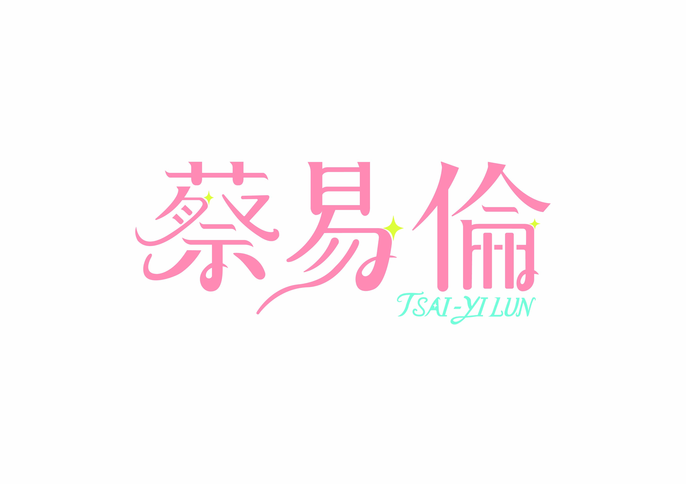
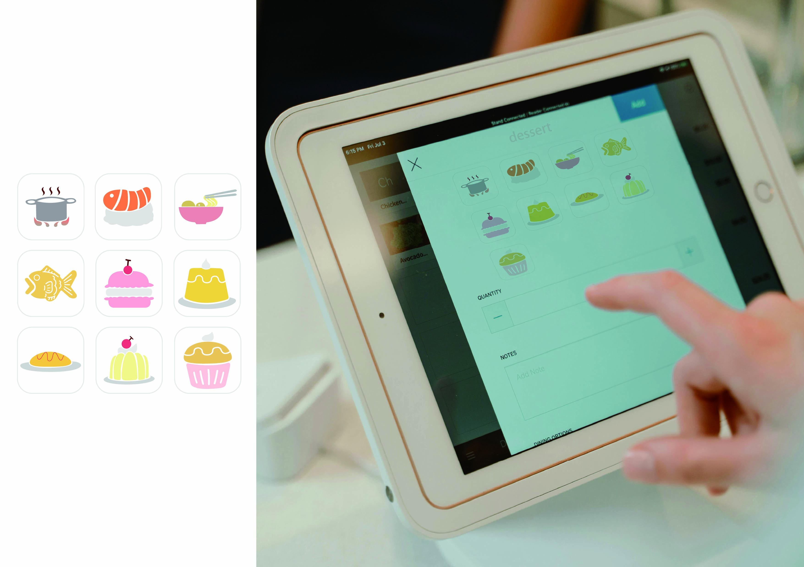
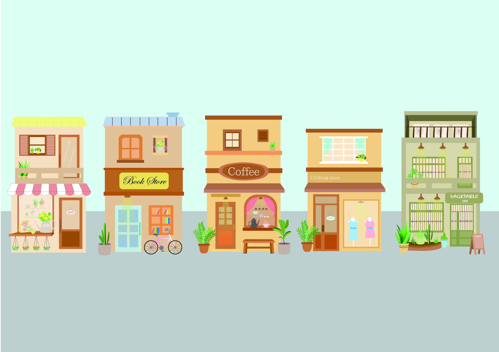
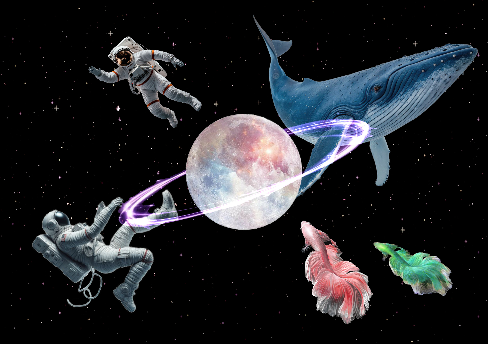

以柔和曲線與粉紫色調展現女性氣質，加入夢幻與可愛元素，象徵溫柔與自信並存的特質，藉此打破名字帶來的性別誤解，傳達屬於自己的柔軟力量與個人風格。

這是一組以柔和色調設計的食物圖示，結合甜點與料理元素，展現溫馨可愛的視覺風格。適合應用於餐飲介面、菜單設計或品牌插畫，營造親切與愉悅的氛圍。

以溫暖色調繪製的街景插畫，小店外觀各具特色，包含花店、咖啡館、服飾店等，展現療癒又生活感十足的城市氛圍，讓人感受到悠閒與溫度並存的日常風景。

結合宇宙與海洋意象，創造夢幻奇幻的探索氣圈，像徵自由與無限想像。